Build and Evaluate a Linear Risk model
Welcome to the first assignment in Course 2!
Outline
- 1. Import Packages
- 2. Load Data
- 3. Explore the Dataset
- 4. Mean-Normalize the Data
- 5. Build the Model
- 6. Evaluate the Model Using the C-Index
- 7. Evaluate the Model on the Test Set
- 8. Improve the Model
- 9. Evalute the Improved Model
Overview of the Assignment
In this assignment, you’ll build a risk score model for retinopathy in diabetes patients using logistic regression.
As we develop the model, we will learn about the following topics:
- Data preprocessing
- Log transformations
- Standardization
- Basic Risk Models
- Logistic Regression
- C-index
- Interactions Terms
Diabetic Retinopathy
Retinopathy is an eye condition that causes changes to the blood vessels in the part of the eye called the retina.
This often leads to vision changes or blindness.
Diabetic patients are known to be at high risk for retinopathy.
Logistic Regression
Logistic regression is an appropriate analysis to use for predicting the probability of a binary outcome. In our case, this would be the probability of having or not having diabetic retinopathy.
Logistic Regression is one of the most commonly used algorithms for binary classification. It is used to find the best fitting model to describe the relationship between a set of features (also referred to as input, independent, predictor, or explanatory variables) and a binary outcome label (also referred to as an output, dependent, or response variable). Logistic regression has the property that the output prediction is always in the range $[0,1]$. Sometimes this output is used to represent a probability from 0%-100%, but for straight binary classification, the output is converted to either $0$ or $1$ depending on whether it is below or above a certain threshold, usually $0.5$.
It may be confusing that the term regression appears in the name even though logistic regression is actually a classification algorithm, but that’s just a name it was given for historical reasons.
1. Import Packages
We’ll first import all the packages that we need for this assignment.
numpyis the fundamental package for scientific computing in python.pandasis what we’ll use to manipulate our data.matplotlibis a plotting library.
1 | import numpy as np |
2. Load Data
First we will load in the dataset that we will use for training and testing our model.
- Run the next cell to load the data using a function imported from our local utils module.
1 | from utils import load_data |
X and y are Pandas DataFrames that hold the data for 6,000 diabetic patients.
3. Explore the Dataset
The features (X) include the following fields:
- Age: (years)
- Systolic_BP: Systolic blood pressure (mmHg)
- Diastolic_BP: Diastolic blood pressure (mmHg)
- Cholesterol: (mg/DL)
We can use the head() method to display the first few records of each.
1 | X.head() |
| Age | Systolic_BP | Diastolic_BP | Cholesterol | |
|---|---|---|---|---|
| 0 | 77.196340 | 85.288742 | 80.021878 | 79.957109 |
| 1 | 63.529850 | 99.379736 | 84.852361 | 110.382411 |
| 2 | 69.003986 | 111.349455 | 109.850616 | 100.828246 |
| 3 | 82.638210 | 95.056128 | 79.666851 | 87.066303 |
| 4 | 78.346286 | 109.154591 | 90.713220 | 92.511770 |
1 | X.shape |
(6000, 4)
The target (y) is an indicator of whether or not the patient developed retinopathy.
- y = 1 : patient has retinopathy.
- y = 0 : patient does not have retinopathy.
1 | y.head() |
0 1.0
1 1.0
2 1.0
3 1.0
4 1.0
Name: y, dtype: float64
1 | y.shape |
(6000,)
Before we build a model, let’s take a closer look at the distribution of our training data. To do this, we will split the data into train and test sets using a 75/25 split.
For this, we can use the built in function provided by sklearn library. See the documentation for sklearn.model_selection.train_test_split.
1 | from sklearn.model_selection import train_test_split |
1 | X_train_raw, X_test_raw, y_train, y_test = train_test_split(X, y, train_size=0.75, random_state=0) |
Plot the histograms of each column of X_train below:
1 | for col in X.columns: |
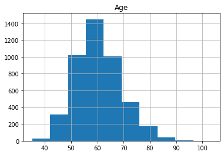
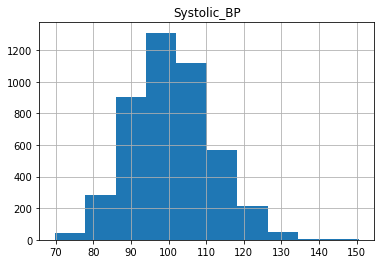
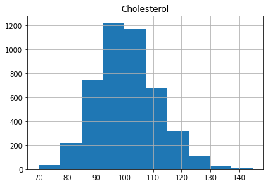
As we can see, the distributions have a generally bell shaped distribution, but with slight rightward skew.
Many statistical models assume that the data is normally distributed, forming a symmetric Gaussian bell shape (with no skew) more like the example below.
1 | from scipy.stats import norm |
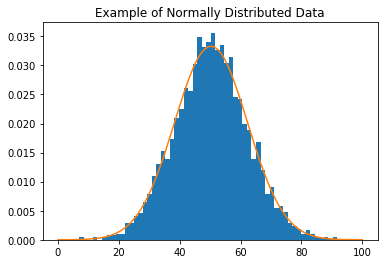
We can transform our data to be closer to a normal distribution by removing the skew. One way to remove the skew is by applying the log function to the data.
Let’s plot the log of the feature variables to see that it produces the desired effect.
1 | for col in X_train_raw.columns: |
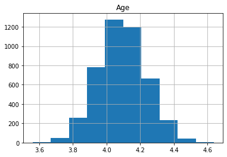
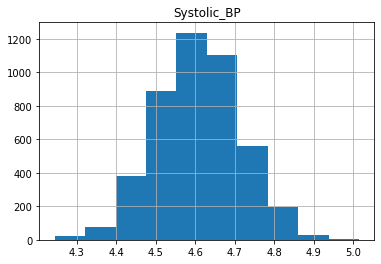
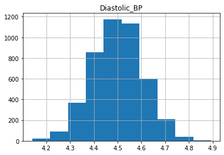
We can see that the data is more symmetric after taking the log.
4. Mean-Normalize the Data
Let’s now transform our data so that the distributions are closer to standard normal distributions.
First we will remove some of the skew from the distribution by using the log transformation.
Then we will “standardize” the distribution so that it has a mean of zero and standard deviation of 1. Recall that a standard normal distribution has mean of zero and standard deviation of 1.
Exercise 1
- Write a function that first removes some of the skew in the data, and then standardizes the distribution so that for each data point $x$,
- Keep in mind that we want to pretend that the test data is “unseen” data.
- This implies that it is unavailable to us for the purpose of preparing our data, and so we do not want to consider it when evaluating the mean and standard deviation that we use in the above equation. Instead we want to calculate these values using the training data alone, but then use them for standardizing both the training and the test data.
- For a further discussion on the topic, see this article “Why do we need to re-use training parameters to transform test data”.
Note
- For the sample standard deviation, please calculate the unbiased estimator:
- In other words, if you numpy, set the degrees of freedom
ddofto 1. - For pandas, the default
ddofis already set to 1.
Hints
- When working with Pandas DataFrames, you can use the aggregation functions
meanandstdfunctions. Note that in order to apply an aggregation function separately for each row or each column, you'll set the axis parameter to either0or1. One produces the aggregation along columns and the other along rows, but it is easy to get them confused. So experiment with each option below to see which one you should use to get an average for each column in the dataframe.avg = df.mean(axis=0) avg = df.mean(axis=1) - Remember to use training data statistics when standardizing both the training and the test data.
1 | # UNQ_C1 (UNIQUE CELL IDENTIFIER, DO NOT EDIT) |
Test Your Work
1 | # test |
Training set transformed field1 has mean -0.0000 and standard deviation 1.0000
Test set transformed, field1 has mean 0.1144 and standard deviation 0.9749
Skew of training set field1 before transformation: 1.6523
Skew of training set field1 after transformation: 1.0857
Skew of test set field1 before transformation: 1.3896
Skew of test set field1 after transformation: 0.1371
Expected Output:
1 | Training set transformed field1 has mean -0.0000 and standard deviation 1.0000 |
Transform training and test data
Use the function that you just implemented to make the data distribution closer to a standard normal distribution.
1 | X_train, X_test = make_standard_normal(X_train_raw, X_test_raw) |
After transforming the training and test sets, we’ll expect the training set to be centered at zero with a standard deviation of $1$.
We will avoid observing the test set during model training in order to avoid biasing the model training process, but let’s have a look at the distributions of the transformed training data.
1 | for col in X_train.columns: |
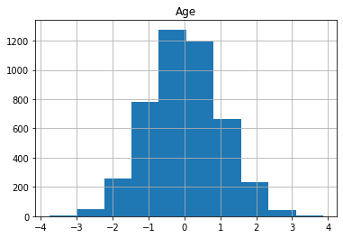
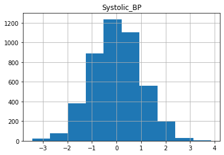
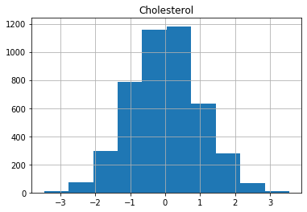
5. Build the Model
Now we are ready to build the risk model by training logistic regression with our data.
Exercise 2
- Implement the
lr_modelfunction to build a model using logistic regression with theLogisticRegressionclass fromsklearn. - See the documentation for sklearn.linear_model.LogisticRegression.
Hints
- You can leave all the parameters to their default values when constructing an instance of the
sklearn.linear_model.LogisticRegressionclass. If you get a warning message regarding thesolverparameter, however, you may want to specify that particular one explicitly withsolver='lbfgs'.
1 | # UNQ_C2 (UNIQUE CELL IDENTIFIER, DO NOT EDIT) |
Test Your Work
Note: the predict method returns the model prediction after converting it from a value in the $[0,1]$ range to a $0$ or $1$ depending on whether it is below or above $0.5$.
1 | # Test |
[1.]
[1.]
Expected Output:
1 | [1.] |
Now that we’ve tested our model, we can go ahead and build it. Note that the lr_model function also fits the model to the training data.
1 | model_X = lr_model(X_train, y_train) |
6. Evaluate the Model Using the C-index
Now that we have a model, we need to evaluate it. We’ll do this using the c-index.
- The c-index measures the discriminatory power of a risk score.
- Intuitively, a higher c-index indicates that the model’s prediction is in agreement with the actual outcomes of a pair of patients.
- The formula for the c-index is
- A permissible pair is a pair of patients who have different outcomes.
- A concordant pair is a permissible pair in which the patient with the higher risk score also has the worse outcome.
- A tie is a permissible pair where the patients have the same risk score.
Exercise 3
- Implement the
cindexfunction to compute c-index. y_trueis the array of actual patient outcomes, 0 if the patient does not eventually get the disease, and 1 if the patient eventually gets the disease.scoresis the risk score of each patient. These provide relative measures of risk, so they can be any real numbers. By convention, they are always non-negative.Here is an example of input data and how to interpret it:
1
2y_true = [0,1]
scores = [0.45, 1.25]- There are two patients. Index 0 of each array is associated with patient 0. Index 1 is associated with patient 1.
- Patient 0 does not have the disease in the future (
y_trueis 0), and based on past information, has a risk score of 0.45. - Patient 1 has the disease at some point in the future (
y_trueis 1), and based on past information, has a risk score of 1.25.
1 | # UNQ_C3 (UNIQUE CELL IDENTIFIER, DO NOT EDIT) |
Test Your Work
You can use the following test cases to make sure your implementation is correct.
1 | # test |
Case 1 Output: 0.0
Case 2 Output: 1.0
Case 3 Output: 0.875
0.875
Expected Output:
1 | Case 1 Output: 0.0 |
Note
Please check your implementation of the for loops.
- There is way to make a mistake on the for loops that cannot be caught with unit tests.
- Bonus: Can you think of what this error could be, and why it can’t be caught by unit tests?
7. Evaluate the Model on the Test Set
Now, you can evaluate your trained model on the test set.
To get the predicted probabilities, we use the predict_proba method. This method will return the result from the model before it is converted to a binary 0 or 1. For each input case, it returns an array of two values which represent the probabilities for both the negative case (patient does not get the disease) and positive case (patient the gets the disease).
1 | scores = model_X.predict_proba(X_test)[:, 1] |
c-index on test set is 0.8182
Expected output:
1 | c-index on test set is 0.8336 |
Let’s plot the coefficients to see which variables (patient features) are having the most effect. You can access the model coefficients by using model.coef_
1 | coeffs = pd.DataFrame(data = model_X.coef_, columns = X_train.columns) |
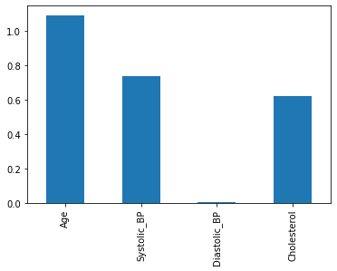
Question:
Which three variables have the largest impact on the model’s predictions?
8. Improve the Model
You can try to improve your model by including interaction terms.
- An interaction term is the product of two variables.
- For example, if we have data
- We could add the product so that:
Exercise 4
Write code below to add all interactions between every pair of variables to the training and test datasets.
1 | # UNQ_C4 (UNIQUE CELL IDENTIFIER, DO NOT EDIT) |
Test Your Work
Run the cell below to check your implementation.
1 | print("Original Data") |
Original Data
Age Systolic_BP
1824 -0.912451 -0.068019
253 -0.302039 1.719538
1114 2.576274 0.155962
3220 1.163621 -2.033931
2108 -0.446238 -0.054554
Data w/ Interactions
Age Systolic_BP Age_x_Systolic_BP
1824 -0.912451 -0.068019 0.062064
253 -0.302039 1.719538 -0.519367
1114 2.576274 0.155962 0.401800
3220 1.163621 -2.033931 -2.366725
2108 -0.446238 -0.054554 0.024344
Expected Output:
1 | Original Data |
Once you have correctly implemented add_interactions, use it to make transformed version of X_train and X_test.
1 | X_train_int = add_interactions(X_train) |
9. Evaluate the Improved Model
Now we can train the new and improved version of the model.
1 | model_X_int = lr_model(X_train_int, y_train) |
Let’s evaluate our new model on the test set.
1 | scores_X = model_X.predict_proba(X_test)[:, 1] |
c-index on test set without interactions is 0.8182
c-index on test set with interactions is 0.8281
You should see that the model with interaction terms performs a bit better than the model without interactions.
Now let’s take another look at the model coefficients to try and see which variables made a difference. Plot the coefficients and report which features seem to be the most important.
1 | int_coeffs = pd.DataFrame(data = model_X_int.coef_, columns = X_train_int.columns) |
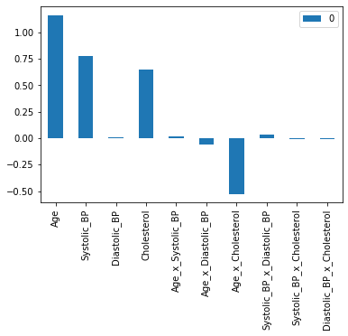
Questions:
Which variables are most important to the model?
Have the relevant variables changed?
What does it mean when the coefficients are positive or negative?
You may notice that Age, Systolic_BP, and Cholesterol have a positive coefficient. This means that a higher value in these three features leads to a higher prediction probability for the disease. You also may notice that the interaction of Age x Cholesterol has a negative coefficient. This means that a higher value for the Age x Cholesterol product reduces the prediction probability for the disease.
To understand the effect of interaction terms, let’s compare the output of the model we’ve trained on sample cases with and without the interaction. Run the cell below to choose an index and look at the features corresponding to that case in the training set.
1 | index = index = 3432 |
Age 2.502061
Systolic_BP 1.713547
Diastolic_BP 0.268265
Cholesterol 2.146349
Age_x_Systolic_BP 4.287400
Age_x_Diastolic_BP 0.671216
Age_x_Cholesterol 5.370296
Systolic_BP_x_Diastolic_BP 0.459685
Systolic_BP_x_Cholesterol 3.677871
Diastolic_BP_x_Cholesterol 0.575791
Name: 5970, dtype: float64
We can see that they have above average Age and Cholesterol. We can now see what our original model would have output by zero-ing out the value for Cholesterol and Age.
1 | new_case = case.copy(deep=True) |
Age 2.502061
Systolic_BP 1.713547
Diastolic_BP 0.268265
Cholesterol 2.146349
Age_x_Systolic_BP 4.287400
Age_x_Diastolic_BP 0.671216
Age_x_Cholesterol 0.000000
Systolic_BP_x_Diastolic_BP 0.459685
Systolic_BP_x_Cholesterol 3.677871
Diastolic_BP_x_Cholesterol 0.575791
Name: 5970, dtype: float64
1 | print(f"Output with interaction: \t{model_X_int.predict_proba([case.values])[:, 1][0]:.4f}") |
Output with interaction: 0.9448
Output without interaction: 0.9965
Expected output
1 | Output with interaction: 0.9448 |
We see that the model is less confident in its prediction with the interaction term than without (the prediction value is lower when including the interaction term). With the interaction term, the model has adjusted for the fact that the effect of high cholesterol becomes less important for older patients compared to younger patients.
Congratulations!
You have finished the first assignment of Course 2.